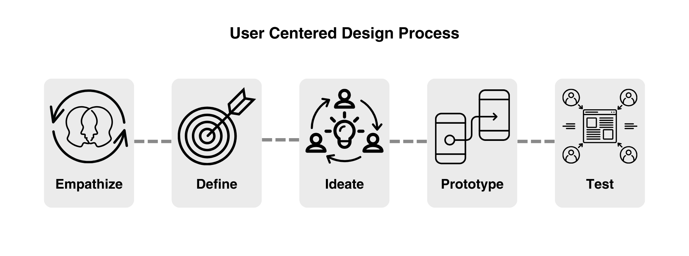
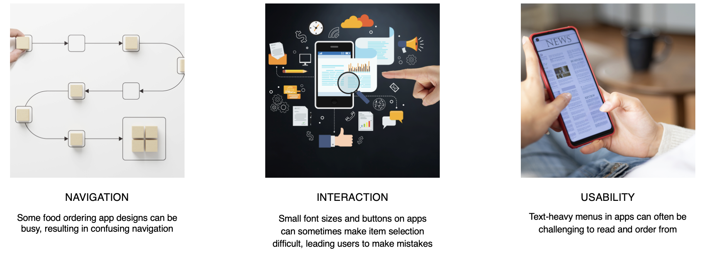

Calii Love
UX Design | Google UX Design Course | 2023
Calii Love is a healthy food chain located in the middle of a metropolitan area. Calii Love strives to serve healthy, fresh, sustainable, and delicious dishes made by chef and nutritionist working closely together. Calii Love targets customers like commuters and workers who lack the time or ability to prepare healthy and fresh food.
THE CHALLENGE
Available online food ordering apps have inefficient systems for browsing items, and confusing checkout processes. Working adults require an easy, fast and efficient way of ordering healthy meals.
THE APPROACH
Design an app for the nearest restaurant, Calii Love, allowing customers to easily order, pickup, and have fresh, healthy dishes delivered.

RESEARCH
User interviews and empathy maps facilitated understanding users' wants and needs.
Personas
Key Insights

IDEATION
Brainstorming through sketching and utilizing methods like crazy eights and storyboarding has proven instrumental in crafting diverse design solutions that effectively address user pain points.
The subsequent creation of paper wireframes for the app's homepage ensured the integration of elements prioritized for a quick and easy way to place pickup or delivery orders, ultimately saving users time.
PROCESS
Evaluated various ideas, considering user needs, and proceeded to build the app's user flow.

Initial Design and Digital Wireframes
Using the completed set of digital wireframes, I created a low-fidelity prototype. The primary user flow I connected involved selecting pickup and delivery options, searching, and ordering menu items, enabling the prototype for use in a usability study.
The low-fidelity prototype for the mobile food ordering app can be viewed at this link
High-Fidelity Mockups and Prototype

The final high-fidelity prototype presented cleaner user flows for searching the menu, customizing menu items, and the checkout process. It also met user needs for pickup or delivery options, as well as improved navigation through the app.
View the high-fidelity prototype of the food ordering app here
Accessibility Considerations
- Implemented varying text sizes within headings to ensure a clear visual hierarchy
- Utilized icons and visual landmarks to help users navigate the app
GOING FORWARD
Key Learnings
While designing the app, it became evident that ideas and designs undergo a continuous iteration process centered on user needs. Usability studies and user research influenced each iteration of the app’s designs, and even a small design change can have a significant impact on the user experience.
Next Steps
- Conduct follow-up usability testing
- Identify any additional areas of need and ideate on new features
- Improve upon the accessibility considerations in the app design